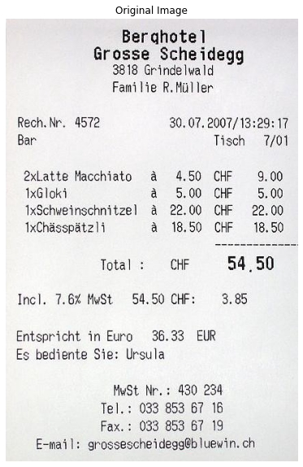
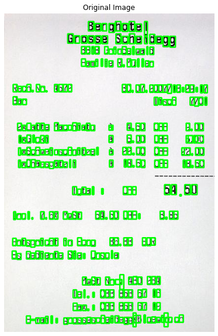
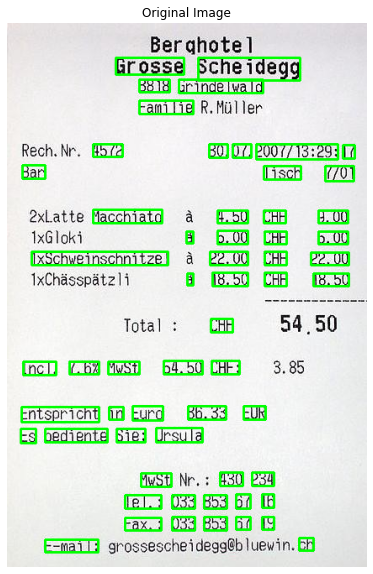
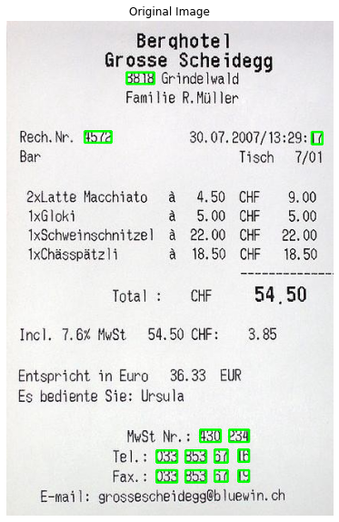

<!DOCTYPE html>

<html>
  <head>
    <meta charset="utf-8" />
    <meta name="viewport" content="width=device-width, initial-scale=1.0" />
    <title>Optical Character Recognition(OCR) &#8212; Computer Vision Course</title>
    
  <link rel="stylesheet" href="../_static/css/index.73d71520a4ca3b99cfee5594769eaaae.css">

    
  <link rel="stylesheet"
    href="../_static/vendor/fontawesome/5.13.0/css/all.min.css">
  <link rel="preload" as="font" type="font/woff2" crossorigin
    href="../_static/vendor/fontawesome/5.13.0/webfonts/fa-solid-900.woff2">
  <link rel="preload" as="font" type="font/woff2" crossorigin
    href="../_static/vendor/fontawesome/5.13.0/webfonts/fa-brands-400.woff2">

    
      
  <link rel="stylesheet"
    href="../_static/vendor/open-sans_all/1.44.1/index.css">
  <link rel="stylesheet"
    href="../_static/vendor/lato_latin-ext/1.44.1/index.css">

    
    <link rel="stylesheet" href="../_static/pygments.css" type="text/css" />
    <link rel="stylesheet" href="../_static/sphinx-book-theme.40e2e510f6b7d1648584402491bb10fe.css" type="text/css" />
    <link rel="stylesheet" type="text/css" href="../_static/togglebutton.css" />
    <link rel="stylesheet" type="text/css" href="../_static/copybutton.css" />
    <link rel="stylesheet" type="text/css" href="../_static/mystnb.css" />
    <link rel="stylesheet" type="text/css" href="../_static/sphinx-thebe.css" />
    <link rel="stylesheet" type="text/css" href="../_static/panels-main.c949a650a448cc0ae9fd3441c0e17fb0.css" />
    <link rel="stylesheet" type="text/css" href="../_static/panels-variables.06eb56fa6e07937060861dad626602ad.css" />
    
  <link rel="preload" as="script" href="../_static/js/index.3da636dd464baa7582d2.js">

    <script id="documentation_options" data-url_root="../" src="../_static/documentation_options.js"></script>
    <script src="../_static/jquery.js"></script>
    <script src="../_static/underscore.js"></script>
    <script src="../_static/doctools.js"></script>
    <script src="../_static/togglebutton.js"></script>
    <script src="../_static/clipboard.min.js"></script>
    <script src="../_static/copybutton.js"></script>
    <script >var togglebuttonSelector = '.toggle, .admonition.dropdown, .tag_hide_input div.cell_input, .tag_hide-input div.cell_input, .tag_hide_output div.cell_output, .tag_hide-output div.cell_output, .tag_hide_cell.cell, .tag_hide-cell.cell';</script>
    <script src="../_static/sphinx-book-theme.d31b09fe5c1d09cb49b26a786de4a05d.js"></script>
    <script async="async" src="https://cdnjs.cloudflare.com/ajax/libs/mathjax/2.7.7/latest.js?config=TeX-AMS-MML_HTMLorMML"></script>
    <script type="text/x-mathjax-config">MathJax.Hub.Config({"tex2jax": {"inlineMath": [["\\(", "\\)"]], "displayMath": [["\\[", "\\]"]], "processRefs": false, "processEnvironments": false}})</script>
    <script async="async" src="https://unpkg.com/thebelab@latest/lib/index.js"></script>
    <script >
        const thebe_selector = ".thebe"
        const thebe_selector_input = "pre"
        const thebe_selector_output = ".output"
    </script>
    <script async="async" src="../_static/sphinx-thebe.js"></script>
    <link rel="index" title="Index" href="../genindex.html" />
    <link rel="search" title="Search" href="../search.html" />
    <link rel="next" title="Conclusion" href="10_conclusion.html" />
    <link rel="prev" title="Feature Extraction" href="08_feature_extraction.html" />

    <meta name="viewport" content="width=device-width, initial-scale=1" />
    <meta name="docsearch:language" content="en" />


  </head>
  <body data-spy="scroll" data-target="#bd-toc-nav" data-offset="80">
    

    <div class="container-xl">
      <div class="row">
          
<div class="col-12 col-md-3 bd-sidebar site-navigation show" id="site-navigation">
    
        <div class="navbar-brand-box">
<a class="navbar-brand text-wrap" href="../index.html">
  
  
  
  
  <h1 class="site-logo" id="site-title">Computer Vision Course</h1>
  
</a>
</div><form class="bd-search d-flex align-items-center" action="../search.html" method="get">
  <i class="icon fas fa-search"></i>
  <input type="search" class="form-control" name="q" id="search-input" placeholder="Search this book..." aria-label="Search this book..." autocomplete="off" >
</form>
<nav class="bd-links" id="bd-docs-nav" aria-label="Main navigation">
    <ul class="nav sidenav_l1">
 <li class="toctree-l1">
  <a class="reference internal" href="01_introduction.html">
   Introduction to Computer vision
  </a>
 </li>
</ul>
<ul class="current nav sidenav_l1">
 <li class="toctree-l1">
  <a class="reference internal" href="02_drawing.html">
   More on pixels
  </a>
 </li>
 <li class="toctree-l1">
  <a class="reference internal" href="03_face_detection.html">
   Face Detection
  </a>
 </li>
 <li class="toctree-l1">
  <a class="reference internal" href="04_blur.html">
   Smoothing and blurring
  </a>
 </li>
 <li class="toctree-l1">
  <a class="reference internal" href="05_thres_edge_contour.html">
   Thresholding
  </a>
 </li>
 <li class="toctree-l1">
  <a class="reference internal" href="06_machine_learning.html">
   Machine Learning
  </a>
 </li>
 <li class="toctree-l1">
  <a class="reference internal" href="07_digit_recognition.html">
   Digit Recognition
  </a>
 </li>
 <li class="toctree-l1">
  <a class="reference internal" href="08_feature_extraction.html">
   Feature Extraction
  </a>
 </li>
 <li class="toctree-l1 current active">
  <a class="current reference internal" href="#">
   Optical Character Recognition(OCR)
  </a>
 </li>
 <li class="toctree-l1">
  <a class="reference internal" href="10_conclusion.html">
   Conclusion
  </a>
 </li>
</ul>

</nav> <!-- To handle the deprecated key -->

</div>


          


          
<main class="col py-md-3 pl-md-4 bd-content overflow-auto" role="main">
    
    <div class="row topbar fixed-top container-xl">
    <div class="col-12 col-md-3 bd-topbar-whitespace site-navigation show">
    </div>
    <div class="col pl-2 topbar-main">
        
        <button id="navbar-toggler" class="navbar-toggler ml-0" type="button" data-toggle="collapse"
            data-toggle="tooltip" data-placement="bottom" data-target=".site-navigation" aria-controls="navbar-menu"
            aria-expanded="true" aria-label="Toggle navigation" aria-controls="site-navigation"
            title="Toggle navigation" data-toggle="tooltip" data-placement="left">
            <i class="fas fa-bars"></i>
            <i class="fas fa-arrow-left"></i>
            <i class="fas fa-arrow-up"></i>
        </button>
        
        
        <!-- Source interaction buttons -->


        <!-- Full screen (wrap in <a> to have style consistency -->
        <a class="full-screen-button"><button type="button" class="btn btn-secondary topbarbtn" data-toggle="tooltip"
                data-placement="bottom" onclick="toggleFullScreen()" aria-label="Fullscreen mode"
                title="Fullscreen mode"><i
                    class="fas fa-expand"></i></button></a>

        <!-- Launch buttons -->

    </div>

    <!-- Table of contents -->
    <div class="d-none d-md-block col-md-2 bd-toc show">
        
        <div class="tocsection onthispage pt-5 pb-3">
            <i class="fas fa-list"></i> Contents
        </div>
        <nav id="bd-toc-nav">
            <ul class="nav section-nav flex-column">
 <li class="toc-h2 nav-item toc-entry">
  <a class="reference internal nav-link" href="#what-is-tesseract">
   What is Tesseract ?
  </a>
 </li>
 <li class="toc-h2 nav-item toc-entry">
  <a class="reference internal nav-link" href="#where-it-is-used">
   Where it is used ?
  </a>
 </li>
 <li class="toc-h2 nav-item toc-entry">
  <a class="reference internal nav-link" href="#installing-the-library">
   Installing the library
  </a>
 </li>
 <li class="toc-h2 nav-item toc-entry">
  <a class="reference internal nav-link" href="#text-template-matching">
   Text template matching
  </a>
 </li>
 <li class="toc-h2 nav-item toc-entry">
  <a class="reference internal nav-link" href="#limitations-of-tesseract">
   Limitations of Tesseract
  </a>
 </li>
</ul>

        </nav>
        
    </div>
</div>
    <div id="main-content" class="row">
        <div class="col-12 col-md-9 pl-md-3 pr-md-0">
        
              <div>
                
  <div class="section" id="optical-character-recognition-ocr">
<h1>Optical Character Recognition(OCR)<a class="headerlink" href="#optical-character-recognition-ocr" title="Permalink to this headline">¶</a></h1>
<p>Optical Character Recognition (OCR) is the conversion of images of typed, handwritten or printed text into machine-encoded text, whether from a scanned document, a photo of a document. OCR is a step by step process which includes following steps:</p>
<ol class="simple">
<li><p>Pre-processing</p></li>
<li><p>Text detection</p></li>
<li><p>Text recognition</p></li>
<li><p>Post processing</p></li>
</ol>
<p>This steps changes depending on the application. <strong>Tesseract OCR</strong> is a library used directly or as an API to extract printed text from images. When using Tesseract we don’t have to worry about most of these steps. So let’s see how tesseact ocr works.</p>
<div class="section" id="what-is-tesseract">
<h2>What is Tesseract ?<a class="headerlink" href="#what-is-tesseract" title="Permalink to this headline">¶</a></h2>
<p>Tesseract supports a wide variety of languages. Tesseract doesn’t have a built-in GUI, but there are several available from the 3rdParty page. Tesseract is compatible with many programming languages and frameworks through wrappers. You can find all these details <a class="reference external" href="https://tesseract-ocr.github.io/tessdoc/AddOns">here</a>.</p>
</div>
<div class="section" id="where-it-is-used">
<h2>Where it is used ?<a class="headerlink" href="#where-it-is-used" title="Permalink to this headline">¶</a></h2>
<p>For almost two decades, optical character recognition systems have been widely used to provide automated text entry into computerized systems. Yet in all this time, conventional OCR systems have never overcome their inability to read more than a handful of type fonts and page formats. Proportionally spaced type (which includes virtually all typeset copy), laser printer fonts, and even many non-proportional typewriter fonts, have remained beyond the reach of these systems. And as a result, conventional OCR has never achieved more than a marginal impact on the total number of documents needing conversion into digital form.</p>
<p></p>
</div>
<div class="section" id="installing-the-library">
<h2>Installing the library<a class="headerlink" href="#installing-the-library" title="Permalink to this headline">¶</a></h2>
<p>Get the installer file <a class="reference external" href="https://github.com/UB-Mannheim/tesseract/wiki">here</a>. Open the executable file and install it and don’t forget to add it’s path to Environment variable, we also install the wrapper over tesseract known as Pytesseract. It can read all image types supported by the Pillow and Leptonica imaging libraries, including jpeg, png, gif, bmp, tiff, and others. Using following command we can install the library. The command is OS independent and succesfully installs the library.</p>
<div class="highlight-bash notranslate"><div class="highlight"><pre><span></span>&gt; pip install pytesseract
</pre></div>
</div>
<div class="cell docutils container">
<div class="cell_input docutils container">
<div class="highlight-ipython3 notranslate"><div class="highlight"><pre><span></span><span class="kn">import</span> <span class="nn">cv2</span>
<span class="kn">import</span> <span class="nn">pytesseract</span>
<span class="kn">import</span> <span class="nn">numpy</span> <span class="k">as</span> <span class="nn">np</span>
<span class="kn">import</span> <span class="nn">matplotlib.pyplot</span> <span class="k">as</span> <span class="nn">plt</span>
<span class="o">%</span><span class="k">matplotlib</span> inline

<span class="n">custom_config</span> <span class="o">=</span> <span class="sa">r</span><span class="s1">&#39;--oem 3 --psm 6&#39;</span>
</pre></div>
</div>
</div>
</div>
<p>Lets write a simple helper function to plot image</p>
<div class="cell docutils container">
<div class="cell_input docutils container">
<div class="highlight-ipython3 notranslate"><div class="highlight"><pre><span></span><span class="k">def</span> <span class="nf">plot</span><span class="p">(</span><span class="n">img</span><span class="p">,</span> <span class="n">title</span><span class="o">=</span><span class="kc">None</span><span class="p">):</span>
    <span class="n">plt</span><span class="o">.</span><span class="n">figure</span><span class="p">(</span><span class="n">figsize</span> <span class="o">=</span> <span class="p">(</span><span class="mi">7</span><span class="p">,</span><span class="mi">10</span><span class="p">))</span>
    <span class="k">if</span> <span class="n">title</span><span class="p">:</span> <span class="n">plt</span><span class="o">.</span><span class="n">title</span><span class="p">(</span><span class="n">title</span><span class="p">)</span>
    <span class="k">else</span><span class="p">:</span> <span class="n">plt</span><span class="o">.</span><span class="n">title</span><span class="p">(</span><span class="s1">&#39;Original Image&#39;</span><span class="p">)</span>
    <span class="n">plt</span><span class="o">.</span><span class="n">axis</span><span class="p">(</span><span class="kc">False</span><span class="p">)</span>
    <span class="n">plt</span><span class="o">.</span><span class="n">imshow</span><span class="p">(</span><span class="n">img</span><span class="p">);</span>
</pre></div>
</div>
</div>
</div>
<div class="cell docutils container">
<div class="cell_input docutils container">
<div class="highlight-ipython3 notranslate"><div class="highlight"><pre><span></span><span class="n">image</span> <span class="o">=</span> <span class="n">cv2</span><span class="o">.</span><span class="n">imread</span><span class="p">(</span><span class="s1">&#39;images/bill.jpeg&#39;</span><span class="p">)</span>
<span class="n">image</span> <span class="o">=</span> <span class="n">cv2</span><span class="o">.</span><span class="n">cvtColor</span><span class="p">(</span><span class="n">image</span><span class="p">,</span> <span class="n">cv2</span><span class="o">.</span><span class="n">COLOR_BGR2RGB</span><span class="p">)</span>
<span class="n">plot</span><span class="p">(</span><span class="n">image</span><span class="p">)</span>
</pre></div>
</div>
</div>
<div class="cell_output docutils container">

</div>
</div>
<div class="cell docutils container">
<div class="cell_input docutils container">
<div class="highlight-ipython3 notranslate"><div class="highlight"><pre><span></span><span class="n">text</span> <span class="o">=</span> <span class="n">pytesseract</span><span class="o">.</span><span class="n">image_to_string</span><span class="p">(</span><span class="n">image</span><span class="p">,</span> <span class="n">config</span><span class="o">=</span><span class="n">custom_config</span><span class="p">)</span>
<span class="nb">print</span><span class="p">(</span><span class="n">text</span><span class="p">)</span>
</pre></div>
</div>
</div>
<div class="cell_output docutils container">
<div class="output stream highlight-myst-ansi notranslate"><div class="highlight"><pre><span></span>Berghotel
Grosse Scheidegg
3818 Grindelwald
Familie R. Miller
Rech. Nr. 4572 30, 07. 2007/ 13:29: 17
Bar Tisch 7/01
2xLatte Macchiato a 4.50 CHF 9.00
IxGloki a 5.00 CHF 5.00
IxSchweinschnitzel a 22.00 CHF 22.00
IxChasspatz li a 18.50 CHF 18.50
Total: CHF 54.50
Incl. 7.6% MwSt 54.50 CHF: 3.85
Entspricht in Euro 36.33 EUR
Es bediente Sie: Ursula
MwSt Nr. 430 234
Tel.: 033 853 67 16
Fax.: 033 853 67 19
E-mail: grossescheidegg@b |uewin. ch

</pre></div>
</div>
</div>
</div>
<p>From above image we can say that tesseract performs well on the image we have provided.</p>
<p>Sometimes the text in the image is not very readable. So, we have to process our image before we can extract text from it. We can use all the techniques that we learned in this course. Lets have a look</p>
<div class="cell docutils container">
<div class="cell_input docutils container">
<div class="highlight-ipython3 notranslate"><div class="highlight"><pre><span></span><span class="k">def</span> <span class="nf">grayscale</span><span class="p">(</span><span class="n">image</span><span class="p">):</span>
    <span class="k">return</span> <span class="n">cv2</span><span class="o">.</span><span class="n">cvtColor</span><span class="p">(</span><span class="n">image</span><span class="p">,</span> <span class="n">cv2</span><span class="o">.</span><span class="n">COLOR_BGR2GRAY</span><span class="p">)</span>

<span class="k">def</span> <span class="nf">remove_noise</span><span class="p">(</span><span class="n">image</span><span class="p">):</span>
    <span class="k">return</span> <span class="n">cv2</span><span class="o">.</span><span class="n">medianBlur</span><span class="p">(</span><span class="n">image</span><span class="p">,</span><span class="mi">3</span><span class="p">)</span>
 
<span class="k">def</span> <span class="nf">thresholding</span><span class="p">(</span><span class="n">image</span><span class="p">):</span>
    <span class="k">return</span> <span class="n">cv2</span><span class="o">.</span><span class="n">adaptiveThreshold</span><span class="p">(</span><span class="n">image</span><span class="p">,</span> <span class="mi">255</span><span class="p">,</span><span class="n">cv2</span><span class="o">.</span><span class="n">ADAPTIVE_THRESH_GAUSSIAN_C</span><span class="p">,</span> <span class="n">cv2</span><span class="o">.</span><span class="n">THRESH_BINARY_INV</span><span class="p">,</span> <span class="mi">25</span><span class="p">,</span> <span class="mi">3</span><span class="p">)</span>

<span class="k">def</span> <span class="nf">canny</span><span class="p">(</span><span class="n">image</span><span class="p">):</span>
    <span class="k">return</span> <span class="n">cv2</span><span class="o">.</span><span class="n">Canny</span><span class="p">(</span><span class="n">image</span><span class="p">,</span> <span class="mi">50</span><span class="p">,</span> <span class="mi">200</span><span class="p">)</span>

<span class="k">def</span> <span class="nf">deskew</span><span class="p">(</span><span class="n">image</span><span class="p">):</span>
    <span class="n">coords</span> <span class="o">=</span> <span class="n">np</span><span class="o">.</span><span class="n">column_stack</span><span class="p">(</span><span class="n">np</span><span class="o">.</span><span class="n">where</span><span class="p">(</span><span class="n">image</span> <span class="o">&gt;</span> <span class="mi">0</span><span class="p">))</span>
    <span class="n">angle</span> <span class="o">=</span> <span class="n">cv2</span><span class="o">.</span><span class="n">minAreaRect</span><span class="p">(</span><span class="n">coords</span><span class="p">)[</span><span class="o">-</span><span class="mi">1</span><span class="p">]</span>
    <span class="k">if</span> <span class="n">angle</span> <span class="o">&lt;</span> <span class="o">-</span><span class="mi">45</span><span class="p">:</span>
        <span class="n">angle</span> <span class="o">=</span> <span class="o">-</span><span class="p">(</span><span class="mi">90</span> <span class="o">+</span> <span class="n">angle</span><span class="p">)</span>
    <span class="k">else</span><span class="p">:</span>
        <span class="n">angle</span> <span class="o">=</span> <span class="o">-</span><span class="n">angle</span>
    <span class="p">(</span><span class="n">h</span><span class="p">,</span> <span class="n">w</span><span class="p">)</span> <span class="o">=</span> <span class="n">image</span><span class="o">.</span><span class="n">shape</span><span class="p">[:</span><span class="mi">2</span><span class="p">]</span>
    <span class="n">center</span> <span class="o">=</span> <span class="p">(</span><span class="n">w</span> <span class="o">//</span> <span class="mi">2</span><span class="p">,</span> <span class="n">h</span> <span class="o">//</span> <span class="mi">2</span><span class="p">)</span>
    <span class="n">M</span> <span class="o">=</span> <span class="n">cv2</span><span class="o">.</span><span class="n">getRotationMatrix2D</span><span class="p">(</span><span class="n">center</span><span class="p">,</span> <span class="n">angle</span><span class="p">,</span> <span class="mf">1.0</span><span class="p">)</span>
    <span class="n">rotated</span> <span class="o">=</span> <span class="n">cv2</span><span class="o">.</span><span class="n">warpAffine</span><span class="p">(</span><span class="n">image</span><span class="p">,</span> <span class="n">M</span><span class="p">,</span> <span class="p">(</span><span class="n">w</span><span class="p">,</span> <span class="n">h</span><span class="p">),</span> <span class="n">flags</span><span class="o">=</span><span class="n">cv2</span><span class="o">.</span><span class="n">INTER_CUBIC</span><span class="p">,</span> <span class="n">borderMode</span><span class="o">=</span><span class="n">cv2</span><span class="o">.</span><span class="n">BORDER_REPLICATE</span><span class="p">)</span>
    <span class="k">return</span> <span class="n">rotated</span>
</pre></div>
</div>
</div>
</div>
<div class="cell docutils container">
<div class="cell_input docutils container">
<div class="highlight-ipython3 notranslate"><div class="highlight"><pre><span></span><span class="n">gray</span> <span class="o">=</span> <span class="n">grayscale</span><span class="p">(</span><span class="n">image</span><span class="p">)</span>
<span class="nb">print</span><span class="p">(</span><span class="n">pytesseract</span><span class="o">.</span><span class="n">image_to_string</span><span class="p">(</span><span class="n">gray</span><span class="p">))</span>
</pre></div>
</div>
</div>
<div class="cell_output docutils container">
<div class="output stream highlight-myst-ansi notranslate"><div class="highlight"><pre><span></span>Berghotel
Grosse Scheidegg
3818 Grindelwald
Familie R. Miller

Rech.Nr. 4572 30. 07. 2007/13:29: 17
Bar Tisch 7/01

2xLatte Macchiato a@ 4.50 CHF 9.00
IxGloki a 5.00 CHF 5.00
IxSchweinschnitzel a 22.00 CHF 22.00
IxChasspatz |i a 18.50 CHF 18.50

Total: CHF 54.50
Incl. 7.6% MwSt 54.50 CHF: 3.85

Entspricht in Euro 36.33 EUR
Es bediente Sie: Ursula

MwSt Nr. : 430 234
Tel.: 033 853 67 16
Fax.: 033 853 67 19
E-mail: grossescheidegg@b |uewin. ch

</pre></div>
</div>
</div>
</div>
<div class="cell docutils container">
<div class="cell_input docutils container">
<div class="highlight-ipython3 notranslate"><div class="highlight"><pre><span></span><span class="n">deskew_img</span> <span class="o">=</span> <span class="n">deskew</span><span class="p">(</span><span class="n">gray</span><span class="p">)</span>
<span class="nb">print</span><span class="p">(</span><span class="n">pytesseract</span><span class="o">.</span><span class="n">image_to_string</span><span class="p">(</span><span class="n">deskew_img</span><span class="p">))</span>
</pre></div>
</div>
</div>
<div class="cell_output docutils container">
<div class="output stream highlight-myst-ansi notranslate"><div class="highlight"><pre><span></span>Berghotel
Grosse Scheidegg
3818 Grindelwald
Familie R. Miller

Rech.Nr. 4572 30. 07. 2007/13:29: 17
Bar Tisch 7/01

2xLatte Macchiato a@ 4.50 CHF 9.00
IxGloki a 5.00 CHF 5.00
IxSchweinschnitzel a 22.00 CHF 22.00
IxChasspatz |i a 18.50 CHF 18.50

Total: CHF 54.50
Incl. 7.6% MwSt 54.50 CHF: 3.85

Entspricht in Euro 36.33 EUR
Es bediente Sie: Ursula

MwSt Nr. : 430 234
Tel.: 033 853 67 16
Fax.: 033 853 67 19
E-mail: grossescheidegg@b |uewin. ch

</pre></div>
</div>
</div>
</div>
<p>In above image we can see it gives the same result as above because even after converting it to <code class="docutils literal notranslate"><span class="pre">grayscale</span></code> . Similarly our image is <code class="docutils literal notranslate"><span class="pre">already</span> <span class="pre">deskewed</span></code> so it will also remains the same.</p>
<p>Try using <code class="docutils literal notranslate"><span class="pre">removing</span> <span class="pre">noise</span></code>,  <code class="docutils literal notranslate"><span class="pre">thresholding</span></code> and <code class="docutils literal notranslate"><span class="pre">canny</span></code> functions for preprocessing and look at the output. Not all operations will give you expected output. So, tell us which technique performs the worst.</p>
<p><strong>Getting a box arround the text</strong></p>
<div class="cell docutils container">
<div class="cell_input docutils container">
<div class="highlight-ipython3 notranslate"><div class="highlight"><pre><span></span><span class="n">img</span> <span class="o">=</span> <span class="n">cv2</span><span class="o">.</span><span class="n">imread</span><span class="p">(</span><span class="s1">&#39;images/bill.jpeg&#39;</span><span class="p">)</span>
<span class="n">img</span> <span class="o">=</span> <span class="n">cv2</span><span class="o">.</span><span class="n">cvtColor</span><span class="p">(</span><span class="n">img</span><span class="p">,</span> <span class="n">cv2</span><span class="o">.</span><span class="n">COLOR_BGR2RGB</span><span class="p">)</span>

<span class="n">h</span><span class="p">,</span> <span class="n">w</span><span class="p">,</span> <span class="n">c</span> <span class="o">=</span> <span class="n">img</span><span class="o">.</span><span class="n">shape</span>
<span class="n">boxes</span> <span class="o">=</span> <span class="n">pytesseract</span><span class="o">.</span><span class="n">image_to_boxes</span><span class="p">(</span><span class="n">img</span><span class="p">)</span> 
<span class="k">for</span> <span class="n">b</span> <span class="ow">in</span> <span class="n">boxes</span><span class="o">.</span><span class="n">splitlines</span><span class="p">():</span>
    <span class="n">b</span> <span class="o">=</span> <span class="n">b</span><span class="o">.</span><span class="n">split</span><span class="p">(</span><span class="s1">&#39; &#39;</span><span class="p">)[</span><span class="mi">1</span><span class="p">:</span><span class="o">-</span><span class="mi">1</span><span class="p">]</span>
    <span class="n">b</span> <span class="o">=</span> <span class="nb">list</span><span class="p">(</span><span class="nb">map</span><span class="p">(</span><span class="nb">int</span><span class="p">,</span> <span class="n">b</span><span class="p">))</span>
    <span class="n">img</span> <span class="o">=</span> <span class="n">cv2</span><span class="o">.</span><span class="n">rectangle</span><span class="p">(</span><span class="n">img</span><span class="p">,</span> <span class="p">(</span><span class="n">b</span><span class="p">[</span><span class="mi">0</span><span class="p">],</span> <span class="n">h</span><span class="o">-</span><span class="n">b</span><span class="p">[</span><span class="mi">1</span><span class="p">]),</span> <span class="p">(</span><span class="n">b</span><span class="p">[</span><span class="mi">2</span><span class="p">],</span> <span class="n">h</span><span class="o">-</span><span class="n">b</span><span class="p">[</span><span class="mi">3</span><span class="p">]),</span> <span class="p">(</span><span class="mi">0</span><span class="p">,</span> <span class="mi">255</span><span class="p">,</span> <span class="mi">0</span><span class="p">),</span> <span class="mi">2</span><span class="p">)</span>
    
<span class="n">plot</span><span class="p">(</span><span class="n">img</span><span class="p">)</span>
</pre></div>
</div>
</div>
<div class="cell_output docutils container">

</div>
</div>
<p>If you want boxes around words instead of characters, the function <code class="docutils literal notranslate"><span class="pre">image_to_data</span></code> will come in handy. You can use the <code class="docutils literal notranslate"><span class="pre">image_to_data</span></code> function with output type specified with pytesseract Output.</p>
<div class="cell docutils container">
<div class="cell_input docutils container">
<div class="highlight-ipython3 notranslate"><div class="highlight"><pre><span></span><span class="kn">from</span> <span class="nn">pytesseract</span> <span class="kn">import</span> <span class="n">Output</span>

<span class="n">img</span> <span class="o">=</span> <span class="n">cv2</span><span class="o">.</span><span class="n">imread</span><span class="p">(</span><span class="s1">&#39;images/bill.jpeg&#39;</span><span class="p">)</span>
<span class="n">img</span> <span class="o">=</span> <span class="n">cv2</span><span class="o">.</span><span class="n">cvtColor</span><span class="p">(</span><span class="n">img</span><span class="p">,</span> <span class="n">cv2</span><span class="o">.</span><span class="n">COLOR_BGR2RGB</span><span class="p">)</span>
<span class="n">d</span> <span class="o">=</span> <span class="n">pytesseract</span><span class="o">.</span><span class="n">image_to_data</span><span class="p">(</span><span class="n">img</span><span class="p">,</span> <span class="n">output_type</span><span class="o">=</span><span class="n">Output</span><span class="o">.</span><span class="n">DICT</span><span class="p">)</span>
<span class="nb">print</span><span class="p">(</span><span class="n">d</span><span class="o">.</span><span class="n">keys</span><span class="p">())</span>
</pre></div>
</div>
</div>
<div class="cell_output docutils container">
<div class="output stream highlight-myst-ansi notranslate"><div class="highlight"><pre><span></span>dict_keys([&#39;level&#39;, &#39;page_num&#39;, &#39;block_num&#39;, &#39;par_num&#39;, &#39;line_num&#39;, &#39;word_num&#39;, &#39;left&#39;, &#39;top&#39;, &#39;width&#39;, &#39;height&#39;, &#39;conf&#39;, &#39;text&#39;])
</pre></div>
</div>
</div>
</div>
<p>Using this dictionary, we can get each word detected, their bounding box information, the text in them and the confidence scores for each.</p>
<p>We can plot the boxes by using the code below -</p>
<div class="cell docutils container">
<div class="cell_input docutils container">
<div class="highlight-ipython3 notranslate"><div class="highlight"><pre><span></span><span class="n">n_boxes</span> <span class="o">=</span> <span class="nb">len</span><span class="p">(</span><span class="n">d</span><span class="p">[</span><span class="s1">&#39;text&#39;</span><span class="p">])</span>
<span class="k">for</span> <span class="n">i</span> <span class="ow">in</span> <span class="nb">range</span><span class="p">(</span><span class="n">n_boxes</span><span class="p">):</span>
    <span class="k">if</span> <span class="nb">int</span><span class="p">(</span><span class="n">d</span><span class="p">[</span><span class="s1">&#39;conf&#39;</span><span class="p">][</span><span class="n">i</span><span class="p">])</span> <span class="o">&gt;</span> <span class="mi">60</span><span class="p">:</span>
        <span class="p">(</span><span class="n">x</span><span class="p">,</span> <span class="n">y</span><span class="p">,</span> <span class="n">w</span><span class="p">,</span> <span class="n">h</span><span class="p">)</span> <span class="o">=</span> <span class="p">(</span><span class="n">d</span><span class="p">[</span><span class="s1">&#39;left&#39;</span><span class="p">][</span><span class="n">i</span><span class="p">],</span> <span class="n">d</span><span class="p">[</span><span class="s1">&#39;top&#39;</span><span class="p">][</span><span class="n">i</span><span class="p">],</span> <span class="n">d</span><span class="p">[</span><span class="s1">&#39;width&#39;</span><span class="p">][</span><span class="n">i</span><span class="p">],</span> <span class="n">d</span><span class="p">[</span><span class="s1">&#39;height&#39;</span><span class="p">][</span><span class="n">i</span><span class="p">])</span>
        <span class="n">img</span> <span class="o">=</span> <span class="n">cv2</span><span class="o">.</span><span class="n">rectangle</span><span class="p">(</span><span class="n">img</span><span class="p">,</span> <span class="p">(</span><span class="n">x</span><span class="p">,</span> <span class="n">y</span><span class="p">),</span> <span class="p">(</span><span class="n">x</span> <span class="o">+</span> <span class="n">w</span><span class="p">,</span> <span class="n">y</span> <span class="o">+</span> <span class="n">h</span><span class="p">),</span> <span class="p">(</span><span class="mi">0</span><span class="p">,</span> <span class="mi">255</span><span class="p">,</span> <span class="mi">0</span><span class="p">),</span> <span class="mi">2</span><span class="p">)</span>
    
<span class="n">plot</span><span class="p">(</span><span class="n">img</span><span class="p">)</span>
</pre></div>
</div>
</div>
<div class="cell_output docutils container">

</div>
</div>
</div>
<div class="section" id="text-template-matching">
<h2>Text template matching<a class="headerlink" href="#text-template-matching" title="Permalink to this headline">¶</a></h2>
<p>Take the example of trying to find where are numbers in an image. Here our template will be a regular expression pattern that we will match with our OCR results to find the appropriate bounding boxes. We will use the <code class="docutils literal notranslate"><span class="pre">regex</span></code> module and the <code class="docutils literal notranslate"><span class="pre">image_to_data</span></code> function for this.</p>
<div class="cell docutils container">
<div class="cell_input docutils container">
<div class="highlight-ipython3 notranslate"><div class="highlight"><pre><span></span><span class="kn">import</span> <span class="nn">re</span>

<span class="n">img</span> <span class="o">=</span> <span class="n">cv2</span><span class="o">.</span><span class="n">imread</span><span class="p">(</span><span class="s1">&#39;images/bill.jpeg&#39;</span><span class="p">)</span>
<span class="n">img</span> <span class="o">=</span> <span class="n">cv2</span><span class="o">.</span><span class="n">cvtColor</span><span class="p">(</span><span class="n">img</span><span class="p">,</span> <span class="n">cv2</span><span class="o">.</span><span class="n">COLOR_BGR2RGB</span><span class="p">)</span>

<span class="n">d</span> <span class="o">=</span> <span class="n">pytesseract</span><span class="o">.</span><span class="n">image_to_data</span><span class="p">(</span><span class="n">img</span><span class="p">,</span> <span class="n">output_type</span><span class="o">=</span><span class="n">Output</span><span class="o">.</span><span class="n">DICT</span><span class="p">)</span>
<span class="n">pattern</span> <span class="o">=</span> <span class="s1">&#39;^[0-9]*$&#39;</span>

<span class="n">n_boxes</span> <span class="o">=</span> <span class="nb">len</span><span class="p">(</span><span class="n">d</span><span class="p">[</span><span class="s1">&#39;text&#39;</span><span class="p">])</span>
<span class="k">for</span> <span class="n">i</span> <span class="ow">in</span> <span class="nb">range</span><span class="p">(</span><span class="n">n_boxes</span><span class="p">):</span>
    <span class="k">if</span> <span class="nb">int</span><span class="p">(</span><span class="n">d</span><span class="p">[</span><span class="s1">&#39;conf&#39;</span><span class="p">][</span><span class="n">i</span><span class="p">])</span> <span class="o">&gt;</span> <span class="mi">60</span><span class="p">:</span>
    	<span class="k">if</span> <span class="n">re</span><span class="o">.</span><span class="n">match</span><span class="p">(</span><span class="n">pattern</span><span class="p">,</span> <span class="n">d</span><span class="p">[</span><span class="s1">&#39;text&#39;</span><span class="p">][</span><span class="n">i</span><span class="p">]):</span>
	        <span class="p">(</span><span class="n">x</span><span class="p">,</span> <span class="n">y</span><span class="p">,</span> <span class="n">w</span><span class="p">,</span> <span class="n">h</span><span class="p">)</span> <span class="o">=</span> <span class="p">(</span><span class="n">d</span><span class="p">[</span><span class="s1">&#39;left&#39;</span><span class="p">][</span><span class="n">i</span><span class="p">],</span> <span class="n">d</span><span class="p">[</span><span class="s1">&#39;top&#39;</span><span class="p">][</span><span class="n">i</span><span class="p">],</span> <span class="n">d</span><span class="p">[</span><span class="s1">&#39;width&#39;</span><span class="p">][</span><span class="n">i</span><span class="p">],</span> <span class="n">d</span><span class="p">[</span><span class="s1">&#39;height&#39;</span><span class="p">][</span><span class="n">i</span><span class="p">])</span>
	        <span class="n">img</span> <span class="o">=</span> <span class="n">cv2</span><span class="o">.</span><span class="n">rectangle</span><span class="p">(</span><span class="n">img</span><span class="p">,</span> <span class="p">(</span><span class="n">x</span><span class="p">,</span> <span class="n">y</span><span class="p">),</span> <span class="p">(</span><span class="n">x</span> <span class="o">+</span> <span class="n">w</span><span class="p">,</span> <span class="n">y</span> <span class="o">+</span> <span class="n">h</span><span class="p">),</span> <span class="p">(</span><span class="mi">0</span><span class="p">,</span> <span class="mi">255</span><span class="p">,</span> <span class="mi">0</span><span class="p">),</span> <span class="mi">2</span><span class="p">)</span>

<span class="n">plot</span><span class="p">(</span><span class="n">img</span><span class="p">)</span>
</pre></div>
</div>
</div>
<div class="cell_output docutils container">

</div>
</div>
</div>
<div class="section" id="limitations-of-tesseract">
<h2>Limitations of Tesseract<a class="headerlink" href="#limitations-of-tesseract" title="Permalink to this headline">¶</a></h2>
<p>Tesseract works best when there is a clean segmentation of the foreground text from the background. In practice, it can be extremely challenging to guarantee these types of setup. There are a variety of reasons you might not get good quality output from Tesseract like if the image has noise on the background. The better the image quality (size, contrast, lightning) the better the recognition result.</p>
<p>Tesseract limitations are summed in the list.</p>
<ul class="simple">
<li><p>The OCR is not as accurate as some commercial solutions available to us.</p></li>
<li><p>Doesn’t do well with images affected by artifacts including partial occlusion, distorted perspective, and complex background.</p></li>
<li><p>It is not capable of recognizing handwriting.</p></li>
<li><p>It may find gibberish and report this as OCR output.</p></li>
<li><p>If a document contains languages outside of those given in the -l LANG arguments, results may be poor.</p></li>
</ul>
</div>
</div>

    <script type="text/x-thebe-config">
    {
        requestKernel: true,
        binderOptions: {
            repo: "binder-examples/jupyter-stacks-datascience",
            ref: "master",
        },
        codeMirrorConfig: {
            theme: "abcdef",
            mode: "python"
        },
        kernelOptions: {
            kernelName: "python3",
            path: "./course_material"
        },
        predefinedOutput: true
    }
    </script>
    <script>kernelName = 'python3'</script>

              </div>
              
        </div>
    </div>
    
    
    <div class='prev-next-bottom'>
        
    <a class='left-prev' id="prev-link" href="08_feature_extraction.html" title="previous page">Feature Extraction</a>
    <a class='right-next' id="next-link" href="10_conclusion.html" title="next page">Conclusion</a>

    </div>
    <footer class="footer mt-5 mt-md-0">
    <div class="container">
      <p>
        
          By aiadventures<br/>
        
            &copy; Copyright 2021.<br/>
      </p>
    </div>
  </footer>
</main>


      </div>
    </div>

    
  <script src="../_static/js/index.3da636dd464baa7582d2.js"></script>


    
  </body>
</html>